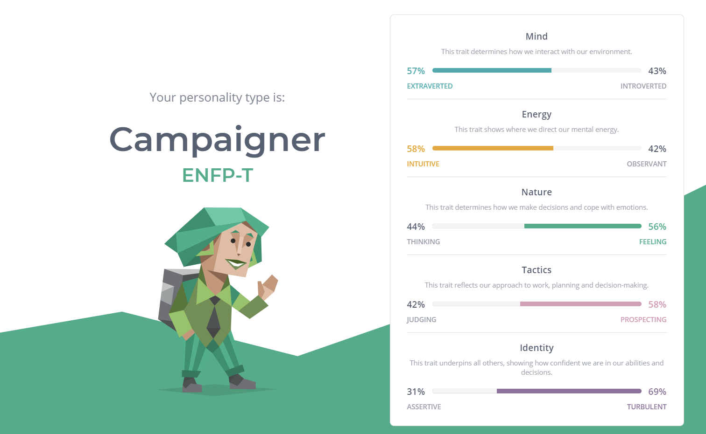
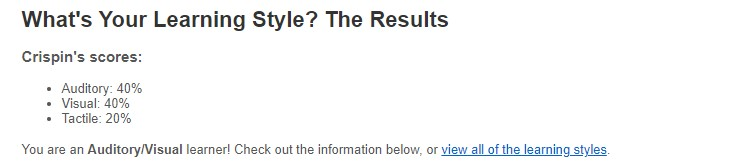
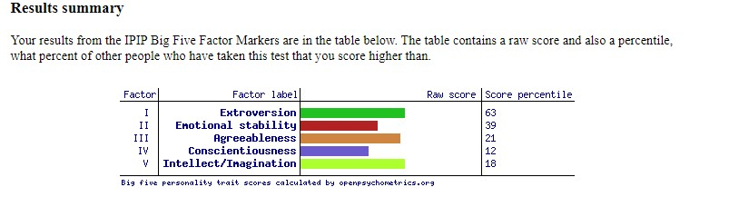

Myers Briggs Type Indicator
The Campaigner Personality Profile looks to be the middle point for everything and seems to encompass both sides while maintaining a balance. I can see why I fit under this personality type because I am an easy going individual who both enjoys social gatherings and having an inner life.
Strengths
The strengths I have that align with the personality type would be being a good communicator by having something to add to the conversation while also being a good listener. I think this is a good trait to have because communication is the foundation of many things in society and being able to express your opinions and take in what people are saying is important. Another strength underlined is being enthusiastic, I wouldn’t consider myself that enthusiastic about everything but when it comes to my interests then I would certainly want to share it with other people and get their ideas and opinions on the subject Curiosity is another big one for me because I enjoy looking for unique things and being open minded when it comes to going beyond my comfort zone.
Weaknesses
The strengths I have that align with the personality type would be being a good communicator by having something to add to the conversation while also being a good listener. I think this is a good trait to have because communication is the foundation of many things in society and being able to express your opinions and take in what people are saying is important. Another strength underlined is being enthusiastic, I wouldn’t consider myself that enthusiastic about everything but when it comes to my interests then I would certainly want to share it with other people and get their ideas and opinions on the subject Curiosity is another big one for me because I enjoy looking for unique things and being open minded when it comes to going beyond my comfort zone.
Team Composition
When working in a team structure, I think the biggest strength is the communication because being a good projector and listening is very important to the team’s core and having that easy flow is beneficial to everyone in the team. The personality type states that micromanagement could be an issue for Campaigners, but I would consider myself to laid back to micromanage the whole group. Being inspiring and caring is something that campaigners excel at in a team environment whether they are a team leader of just a member. I think being able to take criticism and being comfortable with the team is also a good trait to possess.

Test Two
Learning Preferences
After completing the Learning Preferences test, I am an Auditory/Visual learner). For me I would agree with this entirely because it helps me understand new things by following visually and storing it just like that. I believe I have a better time following spoken instructions in comparison to written ones. This is important because I think you will most of the time get spoken instructions in the workplace and while learning. Being a tactile learner is just something I didn’t do while growing up in school because the “Hands-on” approach didn’t really work the best for me, and I had a better time learning through visual and auditory formats.

Test Three
Big 5 Factors
The Big 5
test assesses an individual on the Big Five Factor Markers are Extroversion, Emotional Stability, Agreeableness, Conscientiousness and Intellect/Imagination (openness to experience)
It can be interpreted from factor one that I seem to be around sixty three percent towards extroversion, I can agree with this because I enjoy social gatherings but also need time to myself every now and then and I think having time to yourself is very important for reflection and just to recharge.
Factor two seems to be towards the opposite of negative emotionality, what I took from this one is that I am more towards positivity and can remain calm in stressful situations and am able to try and turn it around for the better.
Factor three is something that I don’t agree with, I don’t understand why it came to this conclusion, but the previous tests are pretty much the opposite of this one. I believe I am friendly and optimistic and more in the range of the fifty to sixty percent range of Factor 3. It states that lower scores are more critical and aggressive towards others but that is something that I refrain from doing.
Factor four reflects the previous tests, and I can agree with it. Since I only got around twelve percent it says that I am impulsive and disorganised. Being disorganised is something that I mentioned above previously, and I agree with this completely and I can agree that sometimes I make impulsive decisions without thinking about the consequences beforehand.
Factor five supposes that I prefer to be more traditional and conventional instead of being openness to experience, I don’t really have an opinion on this because I can’t really remember any experiences that shows which way, I prefer but I think I disagree with this supposed trait because I like to try new things and go out of my comfort zone.
